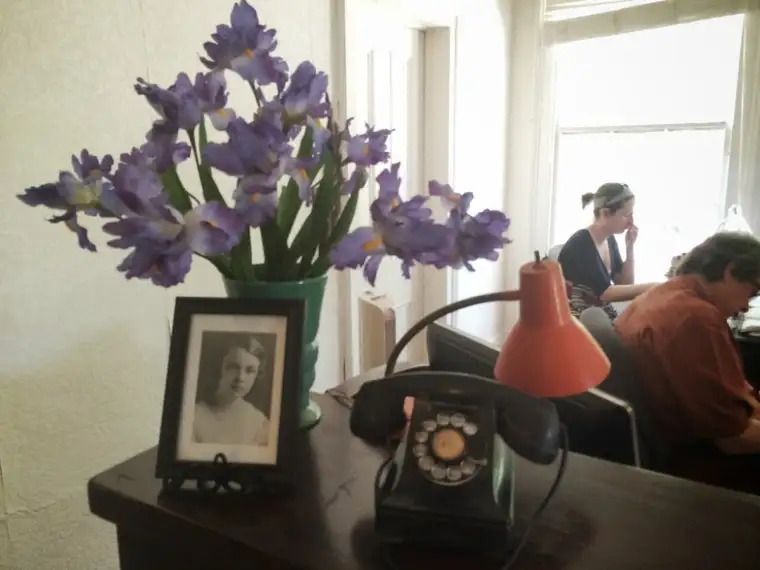
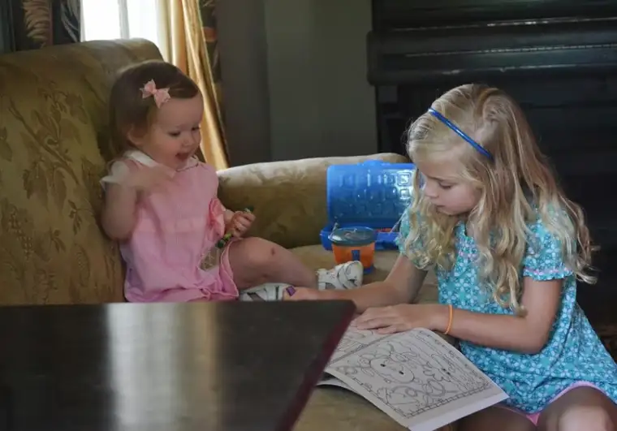
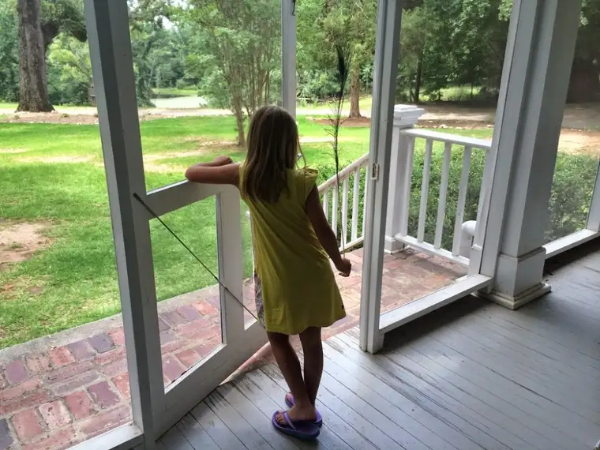

Look, I know there’s that saying about beating a dead horse, but the horse that’s been hanging out at my place isn’t exactly dead just yet. I can’t help but ask him just a few more favors before he says, “That’s it,” and calls it quits.
I’m talking about this whole trip to Andalusia Farm I just experienced with my two writer sisters, Christina and Karen; the trip that I will be absorbing in pieces for as long as it takes I suppose.
 |
| Andalusia Farm office, June 2014 |
{kind=link}
The three of us decided, since we’d gone all that way to visit the place where our heroine, Flannery O’Connor, had spent some of her most prolific writing years, that we’d show up a couple days before the main event just to peruse the place.
{kind=link}
We’re so glad we did. That first tour had us alone, pretty much, exploring the grounds like a trio of Northern toddlers finding for the first time the green of grass and the shine of sun around mid-May.
{kind=link}
We were grateful to have gotten that initial time to ourselves, because our second visit had a nice little crowd gathered inside the farmhouse by the time we arrived.
 |
| Some young story lovers sit a spell with a coloring book on Flannery’s couch |
{kind=link}
They’d all been drawn to the place in part by the promise of a book reading, given by Southern fiction authors Kaye Park Hinckley and Charles McNair.
{kind=link}
The two of them met us at the door of the farmhouse, Hinckley in the lead in her pretty red dress that I couldn’t help but notice, red being my favorite color, and it was adorable besides. What a pleasure it was to meet another Catholic writer right there on Andalusia soil.
{kind=link}
They each gave a brief talk from their perspectives and read from their works; Hinckley on Catholic fiction, the Catholic imagination and the influence of Flannery O’Connor in her writing, and McNair on southern fiction and fiction in general. The event, put on by the Andalusia Foundation and Wise Blood Books, was themed, “Misfits, Mission and Mercy in Southern Fiction.”
{kind=link}
It was pretty surreal, being gathered as we were right in the house where Flannery toiled over finding the right way to make the picture in her head come to life on paper; just steps from where she used to munch on her Mama’s pound cake; only a few paces from where she occasionally meandered out onto the porch to check on her beloved peacocks.
{kind=link}
For Flannery, success wasn’t the same as what some people think of it. After being convinced to go on a pilgrimage to Lourdes, France, to receive healing for her lupus, she later admitted that she hadn’t prayed for physical healing but for her latest novel to come out right and be well-received.
But she took success a step further when writing to a friend who had mentioned, I’m assuming, that she really wasn’t looking to be “successful” in her writing. Flannery was very blunt as always, retorting, “Success means being heard and don’t stand there and tell me you are indifferent to being heard. Everything about you screams to be heard. You may write for the joy of it, but the act of writing is not complete in itself. It has its end in its audience.”
Now I know that just about every writer who reads that gets what she’s saying here. We write for the joy of it, yes, but along with that, we write for our audience. And our end goal in doing so — if we’re being honest with ourselves — is that we’ll be heard. That was success to Flannery, and I can say with no hesitation that it’s my goal, too. When it happens, and affirmation comes, there’s no feeling quite like it.
The day of the reading at Andalusia, Kaye and Charles were heard. We listened to their thoughts about the act of writing and the power of it, and to the stories they’ve created as the result of their dreaming. And we laughed out loud without prompting. Each had something to say that connected with the audience down to the bones.
{kind=link}
Kaye hit a nerve with me when she said that the Catholic writer has a certain approach to life and writing. Every day holds the potential for either a fall or an epiphany, she said, and the possibility of a spiritual epiphany is always present in the work of a writer with a Catholic imagination.
{kind=link}
“The Catholic imagination perceives people as good because God made them good, but he also gave us free will,” she said, which holds the possibility of our pushing away from God.
Flannery’s stories had a lot of this pushing away from God “bidnis” (as she’d say it). She knew that without showing the opposite of mercy, mercy can’t be understood, and without experiencing the opposite of grace, grace can’t be known.
Because of this, people — even people in Milledgeville itself — misunderstood Flannery. Some have called her writing dark and disturbing. But that’s because they don’t understand what she was really after. Reading her letters brings clarity to her intention, and in turn, can bring her fiction to life and help the writer hear her; truly hear her.
I have a feeling that each new writer that understands Flannery effects some kind of wonderful response from her across the veil. And I have a feeling, too, that the same is true for Kaye Park Hinckley when an audience at Andalusia chuckles at her stories; like the one she read to us called “Jimmy’s Cat.” Well, it was enough to make me buy the book, so if that says anything…
{kind=link}
It starts like this:
“Jimmy’s cat wasn’t born one-eyed. I heard he lost it one night in a heat-fight with a big, orange-striped tom when Jimmy was twelve years old. Jimmy’s twenty-seven, now, and the vet who sewed up the cat’s eye, sewed it so tight it looks like it was never meant to see in the first place.
“Jimmy’s cat didn’t have a real name. Everybody just called it Jimmy’s Cat. Jimmy’s mamma called it Jimmy’s Cat, Jimmy’s grandmamma called it Jimmy’s cat. And Jimmy’s wife, when he got married, called it Jimmy’s Cat, too.”
{kind=link}
{kind=link}
The rest you’ll have to read for yourself in her hot-off-the-press book, “Birds of a Feather.” Yes, it’s so new that the copies we got were review copies. Woo-ha!
 |
| Just a girl and her peacock feather, Andalusia Farm, June 2014 |
{kind=link}
Q4U: What does success mean to you?